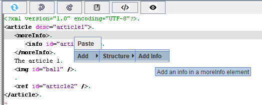
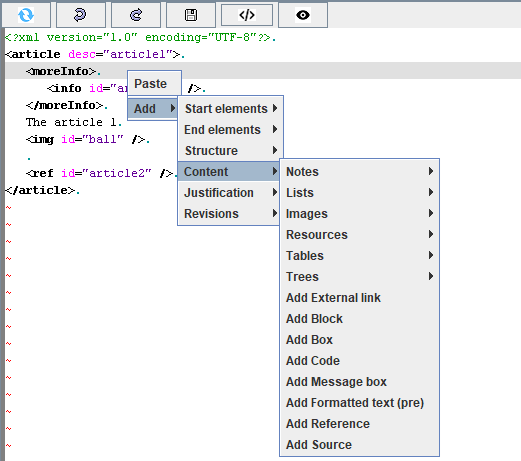

Home
Categories
Dictionary
Download
Project Details
Changes Log
What Links Here
How To
Syntax
FAQ
License
Editor options
The "Options" menu of the Editor allows to:

If checked, it means that only the elements allowed in the position when the menu is added or replaced by th users are presented. For example, if this option is checked, and you try to add an element under a moreInfo element, you will have the following menu:
If this option is not checked, you will have the following menu:
- Automatically save the content of XML elements when navigating in the tree. For eaxmple, if you modify the content of an article in the editor, and you select another file in the tree, it will automatically save your changes before switching to the other element
- Specify the indentation of the editor XML formatting
- Specify if the menus must be shown in context
- Change the way the dependency window will work
Auto Save option
If the "Auto Save" checkbox is checked, then if you modify an XML element, it will automatically be saved when selecting another element in the tree.XML formatting
The "Indentation" numeric editor specifies the indentation to use when formatting XML elements.Show menus in Context
The "Show menus in Context" checkbox specifies if the menus must be shown in context. It is checked by default.If checked, it means that only the elements allowed in the position when the menu is added or replaced by th users are presented. For example, if this option is checked, and you try to add an element under a moreInfo element, you will have the following menu:

If this option is not checked, you will have the following menu:

Auto Refresh option
If the "Auto Refresh" checkbox is checked, then the dependencies window will automatically be refreshed when navigating in the window.See also
- DocGenerator editor: This article explains the DocGenerator editor
×

Categories: Editor | Gui